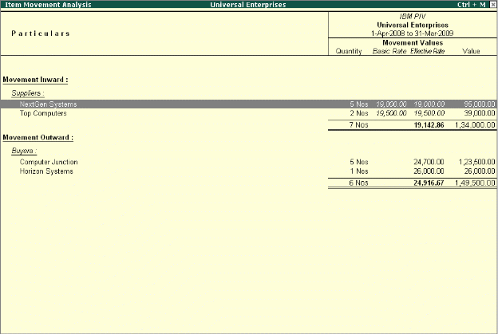

Movement Analysis (Partywise/ Itemwise/ Stock Groupwise)
Tally.ERP 9 offers you yet another important inventory management tool called Movement Analysis. With this report you can analyses the movement pattern of materials either party wise, group wise or item wise. Using this report you can analyze the price at which each supplier has supplied a particular item.
Movement Analysis of a stock group shows the total inward and outward movement of stock items with their effective rates and values for that particular group. The Movement Analysis for a party shows the inward and outward movements of all stocks with effective rate and value. Select an item to drill down further and Tally.ERP 9 displays transaction wise details along with a separate column for additional cost.
Go to Gateway of Tally > Display > Inventory Books > Movement analysis > Stock Item Analysis
# Select the required Stock Item and press Enter

Movement analysis of stock items shows party wise inward and outward movements of stock items with basic rate and effective rate. Select any party to drill down further for more analysis